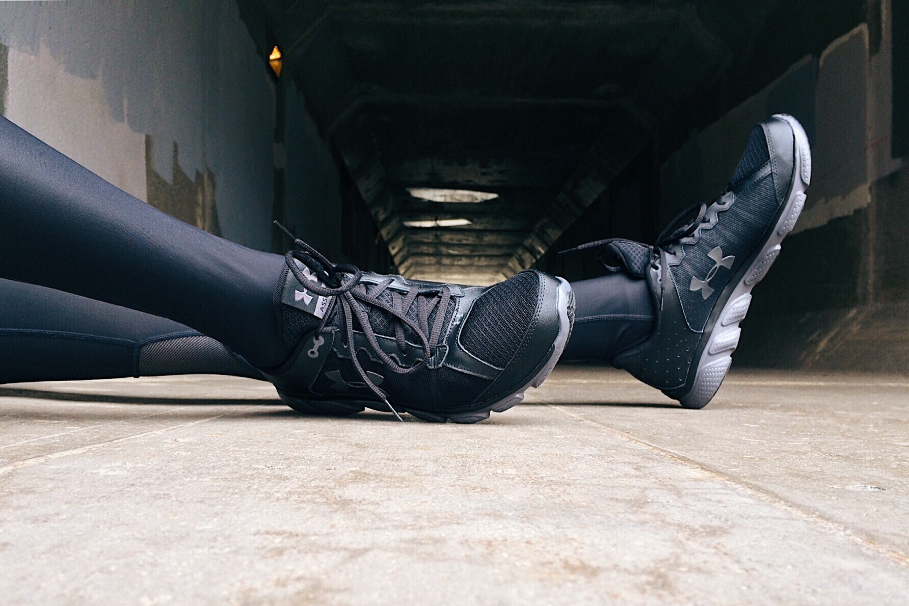

أهمية الرياضة للنساء
الرّياضة مهمَّة جداً للنِّساء، فهي تلعب دوراً في معالجة العديد من الاضطرابات النفسيّة. وتتركَّزالفوائد الصحيّة للتّمارين الرياضيّة على العوامل الشخصيّة، مثل: الفوائد الفسيولوجيّة.... |
|

أفضل 10 تمرينات رياضية يومية للمرأة
من الضروري لصحة المرأة اعتبار ممارسة التمرينات الرياضية كجزء من الروتين اليومي. فالممارسة المنتظمة للرياضة تساعد على الحفاظ على القوام المتناسق للجسم، زيادة القدرة على التحمل، والمرونة. كما تساعد أيضا على الوقاية من الأمراض.... |

6 فوائد صحيّة تمنحها الرياضة لجسم المرأة
تمنح الرياضة العديد من الفوائد الصحيّة لجسم وصحة الإنسان وبشكلٍ خاص لصحة المرأة، حيث تؤكّد الدراسات بأنّ جسد المرأة بحاجة ماسة إلى ممارسة التمارين الرياضية اليوميّة، وذلك لكي يبقى قويّاً بعيداً عن كل المشاكل الصحيّة التي من الممكن أن يتعرّض لها.... |